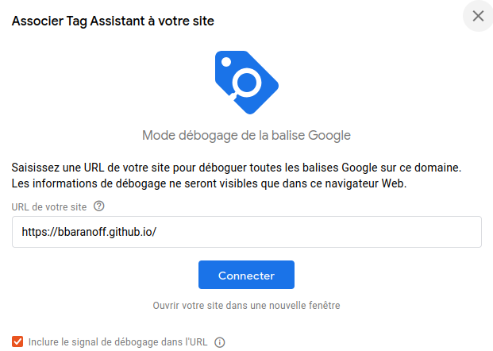
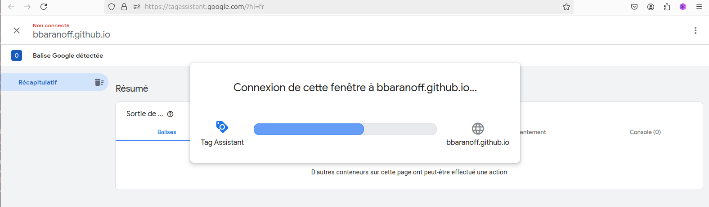
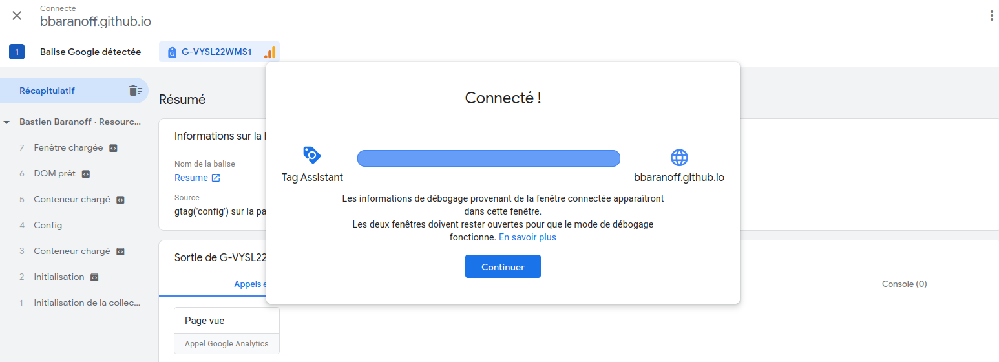
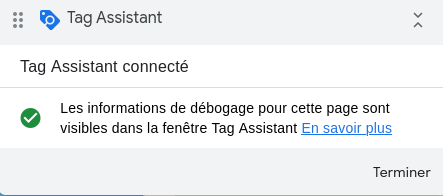
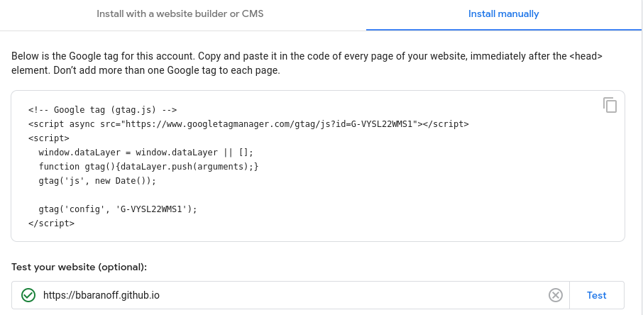
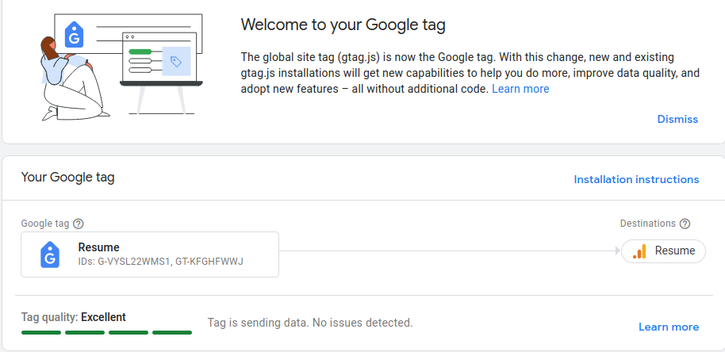
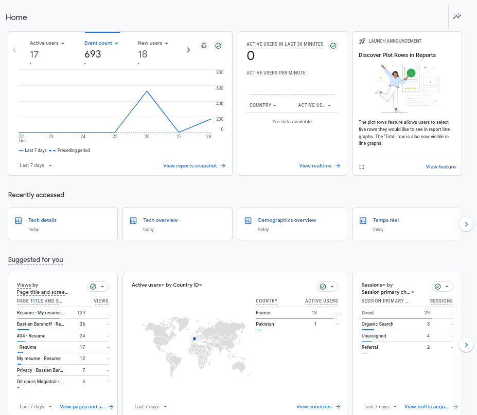

Créer un site web statique pour un portfolio est un projet passionnant qui permet de mettre en valeur vos compétences et réalisations. Voici un plan de travail (TP) détaillé pour vous guider à travers le processus, depuis la conception jusqu’à la mise en ligne.
Objectifs du TP
- Créer un site web statique pour présenter votre portfolio.
- Utiliser HTML, CSS et éventuellement JavaScript pour améliorer l’interactivité.
- Apprendre à organiser les fichiers et à structurer le contenu.
- Déployer le site sur une plateforme gratuite (comme GitHub Pages).
1. Planification du Contenu
Avant de commencer à coder, il est important de planifier le contenu de votre portfolio. Voici quelques sections que vous pourriez inclure :
- Page d’accueil : Présentation brève, photo, et slogan.
- À propos : Une section sur vous-même, vos compétences et votre expérience.
- Projets : Un portfolio de vos travaux, avec des descriptions et des liens vers chaque projet.
- Compétences : Liste de vos compétences techniques et outils que vous maîtrisez.
- Contact : Un formulaire de contact ou des informations sur la façon de vous joindre.
2. Conception du Site
a. Wireframe
Créez un wireframe (croquis) de votre site. Cela peut être fait sur papier ou à l’aide d’outils en ligne comme Figma ou Adobe XD. Définissez la mise en page et l’organisation des sections.
b. Choix des Couleurs et des Polices
Sélectionnez une palette de couleurs et des polices qui correspondent à votre style. Utilisez des outils comme Adobe Color ou Google Fonts pour vous aider dans ce choix.
3. Développement du Site
a. Structure de Fichiers
Organisez vos fichiers de projet. Voici une structure de base :
/portfolio
│
├── index.html
├── about.html
├── projects.html
├── contact.html
│
├── css
│ └── styles.css
│
├── js
│ └── scripts.js
│
└── images
├── profile.jpg
└── project1.jpgb. HTML
Créez le fichier index.html et ajoutez la structure de
base HTML. Voici un exemple de squelette :
<!DOCTYPE html>
<html lang="fr">
<head>
<meta charset="UTF-8">
<meta name="viewport" content="width=device-width, initial-scale=1.0">
<link rel="stylesheet" href="css/styles.css">
<title>Mon Portfolio</title>
</head>
<body>
<header>
<h1>Bienvenue sur mon Portfolio</h1>
<nav>
<ul>
<li><a href="index.html">Accueil</a></li>
<li><a href="about.html">À propos</a></li>
<li><a href="projects.html">Projets</a></li>
<li><a href="contact.html">Contact</a></li>
</ul>
</nav>
</header>
<main>
<section>
<h2>À propos de moi</h2>
<p>Une brève description de vous-même.</p>
</section>
<section>
<h2>Mes Projets</h2>
<ul>
<li><a href="#">Projet 1</a></li>
<li><a href="#">Projet 2</a></li>
</ul>
</section>
</main>
<footer>
<p>© 2024 Mon Nom</p>
</footer>
<script src="js/scripts.js"></script>
</body>
</html>c. CSS
Créez un fichier styles.css pour styliser votre site.
Voici un exemple simple :
body {
font-family: Arial, sans-serif;
margin: 0;
padding: 0;
background-color: #f4f4f4;
}
header {
background: #35424a;
color: #ffffff;
padding: 10px 0;
}
nav ul {
list-style: none;
padding: 0;
}
nav ul li {
display: inline;
margin: 0 15px;
}
a {
color: #ffffff;
text-decoration: none;
}d. JavaScript (optionnel)
Si vous souhaitez ajouter de l’interactivité, créez un fichier
scripts.js. Par exemple, vous pourriez ajouter un script
pour gérer un formulaire de contact.
4. Test du Site
Une fois le développement terminé, ouvrez le fichier
index.html dans votre navigateur pour tester le site.
Vérifiez que toutes les pages s’affichent correctement et que les liens
fonctionnent.
5. Déploiement du Site
a. Hébergement sur GitHub Pages
- Créer un dépôt GitHub : Créez un nouveau dépôt et téléversez vos fichiers.
- Activer GitHub Pages : Allez dans les paramètres du
dépôt, trouvez la section “GitHub Pages” et choisissez la branche
mainpour déployer votre site. - Accéder à votre site : Votre site sera accessible à
une URL comme
https://votre_nom_utilisateur.github.io/nom_du_depot.
6. Améliorations (optionnelles)
- Ajoutez des animations CSS pour rendre le site plus attrayant.
- Intégrez des outils de référencement pour améliorer la visibilité du site.
- Utilisez des frameworks CSS comme Bootstrap pour un design réactif.
Pour ajouter le thème Jekyll RTD (Read the Docs) à votre site GitHub Pages, suivez ces étapes :
1. Créer un dépôt GitHub pour votre site
Si vous n’avez pas encore de dépôt pour héberger votre site, créez un
dépôt sur GitHub, idéalement nommé
<votre-utilisateur>.github.io. Ce nom de dépôt est
important car il détermine l’URL de votre site, qui sera accessible à
l’adresse https://<votre-utilisateur>.github.io.
2. Configurer Jekyll dans le dépôt
Si Jekyll n’est pas encore configuré, commencez par installer Jekyll
localement, ce qui vous permettra de tester les modifications avant de
les publier. Sinon, assurez-vous d’avoir un fichier Gemfile
à la racine de votre dépôt, avec la configuration suivante :
source "https://rubygems.org"
gem "jekyll"
gem "jekyll-theme-rtd"3. Configurer le thème
dans _config.yml
Dans le fichier _config.yml de votre dépôt, ajoutez le
thème Jekyll RTD en modifiant ou en ajoutant l’entrée theme
:
theme: jekyll-theme-rtdCe fichier _config.yml peut également inclure d’autres
options de configuration pour personnaliser le site, comme le titre du
site, la description, etc.
4. Installer les dépendances et tester localement
Dans le terminal, exécutez les commandes suivantes pour installer les dépendances et tester votre site localement :
bundle install
bundle exec jekyll serveCela lancera votre site en local, accessible à l’adresse
http://localhost:4000, pour vérifier que le thème s’affiche
correctement.
5. Pousser le code sur GitHub
Une fois les modifications testées, poussez le code vers votre dépôt GitHub :
git add .
git commit -m "Ajout du thème Jekyll RTD"
git push origin mainAprès cela, GitHub Pages devrait automatiquement générer votre site en utilisant le thème RTD.
6. Vérifier la publication
Accédez à https://<votre-utilisateur>.github.io
pour voir votre site en ligne avec le thème RTD. Le déploiement
peut parfois prendre quelques minutes.
Et voilà ! Votre site GitHub Pages utilise maintenant le thème RTD.
Pour ajouter une bannière de consentement aux cookies sur un site Jekyll (comme pour un site GitHub Pages), vous pouvez intégrer une bibliothèque de consentement aux cookies (comme CookieConsent de Osano) ou créer une bannière personnalisée en HTML, CSS et JavaScript.
Voici comment procéder :
Option 1 : Utiliser une bibliothèque existante (CookieConsent)
Ajouter le code JavaScript : Ajoutez le script CookieConsent dans le fichier _includes/head.html (ou directement dans le fichier default.html
du dossier_layoutssi vous n’utilisez pas de fichierhead.html` séparé).<!-- CookieConsent JavaScript --> <script src="https://cdnjs.cloudflare.com/ajax/libs/cookieconsent2/3.1.1/cookieconsent.min.js"></script> <link rel="stylesheet" href="https://cdnjs.cloudflare.com/ajax/libs/cookieconsent2/3.1.1/cookieconsent.min.css" /> <script> window.addEventListener("load", function() { window.cookieconsent.initialise({ palette: { popup: { background: "#000" }, button: { background: "#f1d600" } }, theme: "classic", position: "bottom", content: { message: "Ce site utilise des cookies pour améliorer votre expérience.", dismiss: "Accepter", link: "En savoir plus", href: "/politique-de-confidentialite" // Lien vers votre page de politique de confidentialité } }); }); </script>Personnaliser le texte et le style : Dans la configuration du script, vous pouvez ajuster les couleurs et le texte de la bannière en modifiant les options
palette,content, etposition.Créer une page de politique de confidentialité : Créez un fichier
politique-de-confidentialite.mdà la racine de votre projet pour inclure les détails de la politique de cookies. Ajoutez un lien vers cette page dans la bannière.
Option 2 : Créer une bannière de cookies personnalisée
Ajouter le HTML de la bannière : Insérez le code HTML suivant dans le fichier
default.html(ou dans_includes/footer.htmlsi vous souhaitez le charger en bas de page) :<div id="cookie-banner" style="display: none; position: fixed; bottom: 0; width: 100%; background: #333; color: #fff; padding: 1em; text-align: center;"> <p>Ce site utilise des cookies pour améliorer votre expérience. <a href="/politique-de-confidentialite" style="color: #f1d600;">En savoir plus</a>.</p> <button id="accept-cookies" style="background-color: #f1d600; border: none; padding: 0.5em 1em; cursor: pointer;">Accepter</button> </div>Ajouter le JavaScript pour afficher et gérer la bannière : Dans le même fichier ou dans un fichier JavaScript externe, ajoutez ce script :
<script> document.addEventListener("DOMContentLoaded", function() { if (!localStorage.getItem("cookiesAccepted")) { document.getElementById("cookie-banner").style.display = "block"; } document.getElementById("accept-cookies").onclick = function() { localStorage.setItem("cookiesAccepted", "true"); document.getElementById("cookie-banner").style.display = "none"; }; }); </script>Ajouter une page de politique de confidentialité : Comme dans la première option, créez une page de politique de confidentialité pour donner aux utilisateurs des informations détaillées sur l’utilisation des cookies.
Pour connecter une balise gtag (Google Analytics) à votre site Jekyll, suivez ces étapes :
1. Créer un compte Google Analytics (si ce n’est pas déjà fait)
- Allez sur Google Analytics et connectez-vous avec votre compte Google.
- Créez une nouvelle propriété en suivant les instructions et notez
l’identifiant de suivi, qui est au format
G-XXXXXXXXXX.
2. Ajouter la balise gtag dans le site Jekyll
Ouvrez le fichier
_layouts/default.html(ou le fichier principal qui définit l’en-tête de votre site, souventdefault.html).Ajoutez le script de Google Analytics dans la balise
<head>pour qu’il se charge sur toutes les pages de votre site. Utilisez le code suivant, en remplaçantG-XXXXXXXXXXpar votre identifiant de suivi :<!-- Global site tag (gtag.js) - Google Analytics --> <script async src="https://www.googletagmanager.com/gtag/js?id=G-XXXXXXXXXX"></script> <script> window.dataLayer = window.dataLayer || []; function gtag(){dataLayer.push(arguments);} gtag('js', new Date()); gtag('config', 'G-XXXXXXXXXX'); </script>Sauvegardez et testez le suivi :
- Après avoir ajouté ce code, poussez vos modifications sur GitHub pour les déployer sur GitHub Pages.
- Pour vérifier que la balise fonctionne, rendez-vous dans votre tableau de bord Google Analytics, sous “Temps réel”, puis ouvrez votre site pour voir si les données de visite sont enregistrées.
Note
Vous pouvez également créer un fichier _includes/analytics.html pour
contenir le code gtag et inclure ce fichier dans le
<head> avec % include analytics.html % entre
accolades, ce qui permet de centraliser les scripts de suivi pour une
gestion plus simple.
- Styliser la bannière : Ajoutez vos propres styles CSS pour personnaliser la bannière en fonction du design de votre site.
Ces options vous permettent de mettre en place une bannière de consentement aux cookies simple et efficace pour votre site Jekyll.
Tag Assistant est une extension Chrome gratuite de Google qui vous aide à vérifier et à déboguer les balises (tags) de votre site, y compris celles de Google Analytics, Google Tag Manager, et d’autres produits Google. Avec Tag Assistant, vous pouvez voir si les balises sont correctement implémentées et si elles transmettent les données comme prévu.
Installation et utilisation de Tag Assistant pour vérifier Google Tag Manager
1. Installer Tag Assistant
- Accédez au Chrome Web Store pour Tag Assistant.
- Cliquez sur “Ajouter à Chrome” et confirmez l’installation.
2. Activer et utiliser Tag Assistant pour tester votre site
- Activer l’extension : Après l’installation, activez Tag Assistant dans la barre d’extensions de votre navigateur.
- Accéder à votre site Jekyll : Rendez-vous sur l’URL
de votre site (par exemple,
https://<votre-utilisateur>.github.io). - Démarrer l’analyse : Cliquez sur l’icône Tag Assistant, puis sur “Activer” pour activer le suivi sur la page.
- Recharger la page : Rechargez la page pour permettre à Tag Assistant de détecter les balises actives.
- Vérifier les balises détectées :
- Tag Assistant listera toutes les balises trouvées, en incluant celles de Google Tag Manager.
- Chaque balise sera accompagnée d’un indicateur de statut : vert (OK), jaune (avertissement), ou rouge (erreur).
- Cliquez sur chaque balise pour voir les détails et identifier les éventuelles erreurs ou avertissements.
3. Déboguer et corriger les problèmes
Si une balise est incorrectement configurée, Tag Assistant fournira des informations sur le problème pour aider à la corriger. Par exemple, il pourrait indiquer une mauvaise ID de conteneur ou des problèmes de chargement.
Tag Assistant est particulièrement utile pour les sites Jekyll sur GitHub Pages, car il vous permet de tester et vérifier vos balises sans avoir accès à un débogueur plus complexe.
Pour configurer Google Tag Manager (GTM) sur un site Jekyll hébergé sur GitHub Pages, suivez ces étapes :




1. Créer un compte et un conteneur Google Tag Manager
- Rendez-vous sur Google Tag Manager et connectez-vous avec votre compte Google.
- Cliquez sur “Créer un compte” et suivez les étapes pour créer un compte et un conteneur pour votre site (nom du site et URL).
- Une fois le conteneur créé, vous recevrez deux extraits de code Tag
Manager : un pour le
<head>et un autre pour le<body>.
2. Ajouter le code Google Tag Manager dans Jekyll
Pour installer GTM dans un site Jekyll, insérez le code dans les
sections <head> et <body> de votre
layout principal, généralement dans
_layouts/default.html.
Ouvrez
_layouts/default.html(ou le fichier principal qui structure vos pages).Ajoutez le premier extrait de code GTM dans le
<head>: Placez le premier code JavaScript immédiatement après l’ouverture de la balise<head>.<!-- Google Tag Manager - code pour le <head> --> <script async src="https://www.googletagmanager.com/gtm.js?id=GTM-XXXXXXX"></script> <script> (function(w,d,s,l,i){w[l]=w[l]||[];w[l].push({'gtm.start': new Date().getTime(), event:'gtm.js'}); var f=d.getElementsByTagName(s)[0], j=d.createElement(s), dl=l!='dataLayer'?'&l='+l:''; j.async=true; j.src='https://www.googletagmanager.com/gtm.js?id='+i+dl; f.parentNode.insertBefore(j,f); })(window,document,'script','dataLayer','GTM-XXXXXXX'); </script>Remplacez
GTM-XXXXXXXpar votre identifiant de conteneur.

Ajoutez le deuxième extrait de code dans le
<body>: Placez le deuxième code immédiatement après l’ouverture de la balise<body>.<!-- Google Tag Manager (noscript) --> <noscript><iframe src="https://www.googletagmanager.com/ns.html?id=GTM-XXXXXXX" height="0" width="0" style="display:none;visibility:hidden"></iframe></noscript>Remplacez également
GTM-XXXXXXXpar votre identifiant.
3. Pousser le code sur GitHub
Enregistrez les modifications et poussez-les sur votre dépôt GitHub Pages pour les déployer :
git add . git commit -m "Ajout de Google Tag Manager" git push origin mainUne fois que GitHub Pages a déployé votre site, Google Tag Manager commencera à être actif sur toutes les pages.
4. Vérifier le fonctionnement avec Tag Assistant
Pour vous assurer que GTM est correctement configuré :
- Installez l’extension Tag Assistant dans Chrome.
- Accédez à votre site et activez Tag Assistant pour voir si votre conteneur GTM est détecté.
- Vous devriez voir votre conteneur avec un indicateur vert si tout fonctionne correctement.

5. Ajouter des balises dans Google Tag Manager
Maintenant que GTM est installé, vous pouvez ajouter des balises (comme Google Analytics, Facebook Pixel, ou des événements de conversion) directement dans le tableau de bord GTM sans avoir à modifier le code de votre site.

# CTFVery simple password protection to static pages or whole websites with no server configuration required: you ca use Dropbox, Amazon S3 or any generic hosting service to host a private, password protected site.